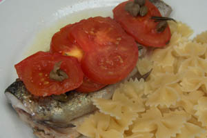

Forel op zijn Siciliaanse
Ingrediënten (voor 4 personen)
- 4 forellen
- 4 tomaten
- 1 bokaal kappertjes
- olijfolie
- oregano
- peper en zout
- pasta
Bereiding
- Snij de kop en de staart van de forellen af.
- Strijk vier grote vellen aluminiumfolie in met olie, leg er de vis op, bestrooi met peper en zout.
- Snij de tomaten in schijfjes en leg ze op de vis; bestrooi me peper en zout.
- Sluit de papillotten zorgvuldig en leg ze op een braadslee of in een grote schotel.
- Laat gedurende een twintigtal minuten gaar worden in een voorverwarmde oven (180°).
- Dien op met pasta.